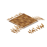

牦牛毛地毯
Yak Hair Rug
英文名: Yak Hair Rug命名空间 ID:
environmental:yak_hair_rug类型: 方块所属模组: Environmental资料检索: 🔎 在 MC百科 搜索「牦牛毛地毯」所属标签
合成获得 (1)
有序合成Environmental
原始 JSON
{
"type": "minecraft:crafting_shaped",
"category": "misc",
"key": {
"#": {
"item": "environmental:yak_hair"
}
},
"pattern": [
"###"
],
"result": {
"count": 1,
"id": "environmental:yak_hair_rug"
}
}